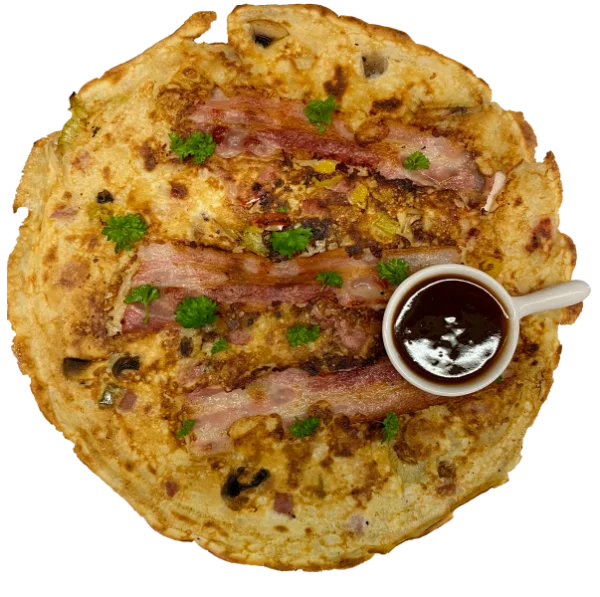
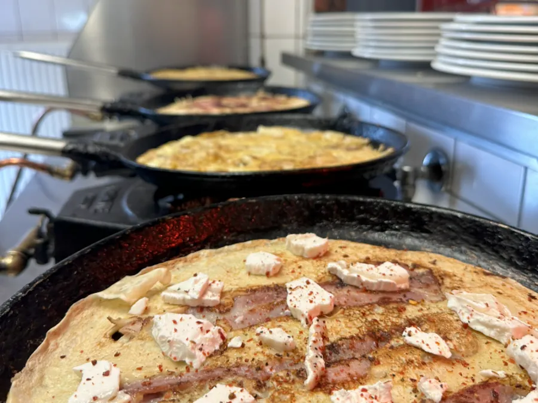
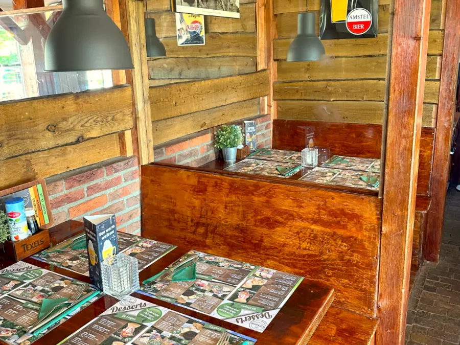
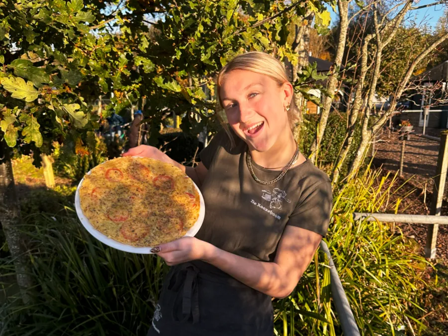
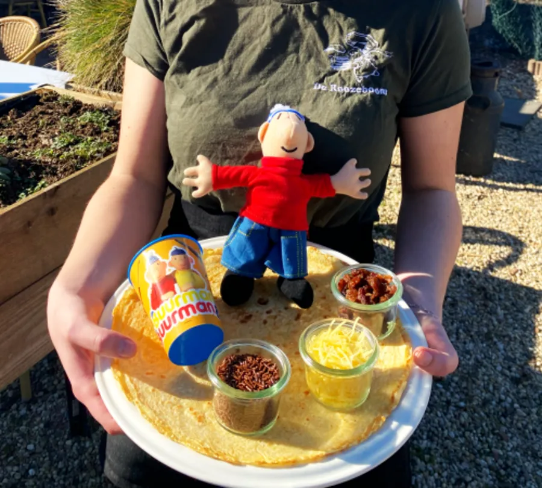
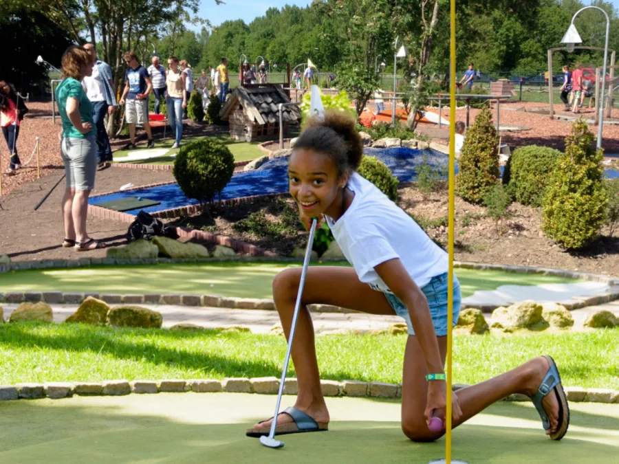

Pannenkoeken uit de gietijzeren pan, aan de rand van het IJsselbos
Al sinds 1999 bakken we in IJsselstein pannenkoeken voor jong en oud. Met een zonnig terras, een speeltuin en twee midgetgolfbanen naast de deur.
Woensdag t/m zondag 12:00 tot 20:00 uur

De Roozeboomtrots van het huis
Ons pannenkoekenhuis
Vanuit onze open keuken ziet u hoe onze bakkers de pannenkoeken bakken in traditionele gietijzeren pannen. Het beslag maken we met de hand, met verse scharreleieren, melk, molenmeel en een paar geheime ingrediënten.
De Obelix, de Parijs en de themapannenkoeken met cadeautje en ijsje voor de kids blijven favoriet. Zin in iets anders dan een pannenkoek? In onze nieuwe keuken maken we ook Roozted Saté, Tray-Baked Salmon en Crispy Schnitzels.
Na het eten een rondje door het IJsselbos, een potje mini- of crazygolf, of gewoon blijven zitten op het terras met een borrelplateau of een ijscoupe. Terwijl de kinderen spelen in de speeltuin of de speelhoek.
Allergie? We kunnen speciaal voor u glutenvrij, lactosevrij of eivrij beslag maken.





Alles voor de kids
Naast onze speelhoek, de midgetgolfbanen en de speeltuin zorgen we met allerlei cadeautjes dat kinderen de dag van hun leven hebben. Een cadeautje bij de kinderpannenkoek, een ijsbeker als toetje, een muntje voor de automaat én een snoephorloge mee naar huis.
Een kinderfeestje bij ons vieren? Dat kan ook, al vanaf €9,95 per kind.
Bekijk de kinderfeestjesPannenkoeken afhalen
Geen zin om zelf te bakken? Bel 030 688 0195 en haal ze bij ons op. Bestellen kan tot 19:00 uur, ophalen vóór 20:00 uur, op basis van beschikbaarheid van de keuken. Bezorgen kan helaas niet. Bij elke bestelling krijgt u gratis poedersuiker en stroop.
2 kaas-, 2 spek- én 2 naturelpannenkoeken. Samenstelling staat vast.
4 naturelpannenkoeken.
2 specialiteitenpannenkoeken en 2 kinderpannenkoeken naar keuze.
2 specialiteitenpannenkoeken en 3 kinderpannenkoeken naar keuze.
Het hele afhaalmenu
Zelf samenstellen
Hartig: spek, ham, kaas, ui, champignons, paprika, tomaat. Zoet: appel, banaan, ananas, rozijnen, kaneel.
Kinderpannenkoeken, €10
Met versiersels, een glinsterend prinsessencadeau en ijsbeker.
Met versiersels, een spannend piratencadeau en ijsbeker.
Met versiersels, magische diadeem en een unicorn-ijsbeker.
Met versiersels, een snelle raceauto en een race-ijsbeker.
Met versiersels, dierenverrassing en ijsbeker.
Specialiteiten, €13
Beenham, ham, kaas, ui, champignons, paprika en beenhamsaus.
Veel kaas, ham, champignons, spek, ui en paprika.
Ui, paprika en gekruide shoarmareepjes met een bakje knoflooksaus.
Geitenkaas, rucola, walnoten en honing.
Beenham, champignons en kaas, met walnoten en honing-mosterdsaus.
Spek, ham, champignons, ui, paprika, peterselie en een rode saus.
Verschillende groenten en gebakken ananas.
Verschillende groenten, tomaat, kaas, oregano en bieslook.
Ham, ui, spek, tomaat, champignons, kaas en oregano.
Spek, ham, ui, kaas, oregano en verse bieslook.
Beenham en speciale honing-mosterd.
Spek, iets pittige harissa en geitenkaas.
Dubbel zoveel ham, kaas en ananas.
Spek, ananas en kaas.
Spek, ham, ui, champignons, paprika en ananas.
Schnitzels & friet
Twee crispy kipschnitzels met patat.
Twee crispy kipschnitzels met romige champignonsaus.
Twee crispy kipschnitzels met gevulde paprikasaus.
Desserts: 3 voor €10
Mini- & crazygolf
Twee banen van 18 holes naast het restaurant, voor jong en oud. Reserveren voor de midgetgolf is niet nodig: er is vrijwel altijd plek. Online koopt u uw ticket met korting.

Minigolf
€6,50 p.p.
Onze originele baan op kunstgras: vlakke banen en strakke lijnen. Perfect voor kids, maar ook voor de professionals. Met een beetje focus heb je zo een hole-in-one. Gemiddeld anderhalf uur golfplezier.
Crazygolf
€9,50 p.p.
18 holes vol hobbels, bobbels en bochten, met spectaculaire hindernissen zoals een mega looping, een racecircuit en een skibaan. Ruim anderhalf uur speelplezier.
Midgetgolf deals
Midgetgolf met een drankje, pannenkoek of ijsje? De deals koopt u alleen online (niet in het restaurant). Beschikbaarheid wisselt per dag en tijd. More Deal en Single Deal zijn het hele jaar te boeken.
More Deal
v.a. €21- Pannenkoek met 3 ingrediënten naar keuze
- Drankje
- Minigolf
- U kiest vooraf: eerst golfen of eerst eten
Single Deal
v.a. €18- Pannenkoek met 1 ingrediënt naar keuze
- Drankje
- Minigolf
- U kiest vooraf: eerst golfen of eerst eten
Budget Deal
v.a. €6,50- Minigolf
- IJsje met één bolletje naar keuze
- Tafel niet gegarandeerd
Basic Deal
v.a. €8- Minigolf
- IJsje met twee bolletjes naar keuze
- Tafel niet gegarandeerd
Spelregels tickets en deals
- Onder reguliere dranken vallen 0.0 en tapbier, huiswijn, fris, koffie, thee en cappuccino. Voor de pannenkoeken kiest u uit 11 reguliere ingrediënten.
- Alleen bij de Single, More en Luxe deal is een tafelreservering inbegrepen. Bij losse tickets en andere deals is een tafel niet gegarandeerd, tenzij u de upgrade naar het borrelplateau kiest.
- De gekozen volgorde (eerst eten of eerst golfen), datum en tijd zijn bindend. Bij drukte geldt voor golf en tafel maximaal anderhalf uur; bij de laatste deals van de middag is de tafel bij drukte tot 16:30 uur.
- Upgrades naar een flesje fris, zakje chips of ijsje, en de Budget, Basic en Time-out deal, zijn voor op de baan en niet om op het terras of in het restaurant te nuttigen.
- Tickets en upgrades zijn niet inwisselbaar voor geld. Verzetten kan tot 24 uur vooraf via deroozeboom@gmail.com; annuleren kan niet.
- Honden zijn welkom in het restaurant en op het terras, maar niet op het midgetgolfterrein en het speelhuisterrein. Onze huisregels gelden voor alle bezoekers.
Groepen, familiedagen & feestjes
Van een klein gezelschap tot een familiedag of teamuitje: ons restaurant en terras zijn geschikt voor groepen tot 200 personen. We maken graag een voorstel op maat; binnen 2 werkdagen heeft u het in uw mailbox. Alle prijzen zijn vanafprijzen, op basis van beschikbaarheid.
Pannenkoekenbuffet
Onbeperkt spek-, appel-, kaas- en naturelpannenkoeken. Prijzen per volwassene.
- Pannenkoekenbuffet
- Pannenkoekenbuffet
- Minigolf
- IJscoupe met slagroom óf Lavazza koffie/thee na
- Als Budget
- Twee reguliere consumpties
- Als Basic
- Koffie/thee/cappuccino met appelgebak en slagroom bij aankomst
Barbecuebuffet
Diverse vleessoorten waaronder American hamburgers, gemarineerde kipsatéstokjes, BBQ-worstjes, biefstukspiezen en spareribs; huzarensalade, aardappelsalade en groene salade; stokbrood met kruidenboter en sauzen.
- Barbecuebuffet
- Barbecuebuffet
- Minigolf
- IJscoupe óf Lavazza koffie/thee na
- Als Budget
- Vers gebakken frites
- Twee reguliere consumpties
- Als Basic
- Ook dagverse vis, zoals zalm, tonijn en garnalen
3-gangenmenu (max. 25 personen)
Voorgerecht: gebakken champignons, tomatensoep of salade geitenkaas, met stokbrood op tafel. Hoofdgerecht: Roozted Saté, Tray-baked Zalm, Crispy Schnitzels of een pannenkoek naar keuze. Na: ijscoupe van de kaart met koffie, thee of cappuccino.
- 3-gangenmenu
- 3-gangenmenu
- Minigolf
- Als Budget
- Twee reguliere consumpties
- 3-gangenmenu en minigolf
- Drie reguliere consumpties
- 3 rondes bittergarnituur op de baan
Meer mogelijkheden
Maaltijdbuffet door de chef: onder meer kip- of varkenssaté, verse beenham uit de oven, kip-kerrie speciaal en koude vis van het seizoen, met salades, aardappelgratin, stokbrood of huisgemaakte soep.
In buffetvorm: sandwiches, quiches, wraps, brownies, tompouces, spekkoek, muffins en meer, met koffie, thee en naar keuze een glaasje bubbels bij aankomst.
Eerst een rondje crazygolf, daarna een drankje met koude borrelhapjes op tafel en warme hapjes die rondgaan.
Diverse broodsoorten met hartig en zoet beleg, huisgemaakte soep en keuze uit eiergerechten, hartige salades of warme gerechten.
Themapannenkoek (prinses, piraat, unicorn, beestenboel of race) met cadeautje, ijsbeker met muntje voor de ballenautomaat en onbeperkt limonade. Kinderen onder 4 jaar mogen ook van de kaart bestellen.
Extra consumptie; koffie/thee met gebak bij ontvangst; borreluurtje met zoutjes en drie rondes bittergarnituur; ijscoupe of koffie als nagerecht (kids: verrassingsbeker met muntje).
Reguliere consumpties: 0.0 en tapbier, huiswijn, fris, koffie, thee en cappuccino. Prijzen onder voorbehoud.
Onbeperkt pannenkoeken eten
Kunt u niet kiezen? Voor €16,95 per persoon bestelt u per ronde één pannenkoek met één ingrediënt, zo vaak als u wilt. Keuze uit kaas, spek, ham, champignons, paprika, ui, tomaat, appel, rozijnen, banaan en ananas.
Telefonisch reserveren is verplicht; geef aan dat het om onbeperkt pannenkoeken gaat. Niet op feestdagen en niet met andere acties. Tussen 17:00 en 19:00 uur heeft de keuken beperkte capaciteit, dus een reservering is altijd op voorbehoud.
Midgetgolf deals
Met een klein gezelschap is een midgetgolf deal ook een mooi uitje: golf met een drankje, pannenkoek of ijsje, online te reserveren en betalen.
Voor kinderen t/m 12 jaar, van een klein partijtje tot een klassenfeest: elk jaar vieren meer dan 1000 kinderen hun verjaardag bij ons. Elke jarige krijgt een klein cadeautje en er wordt natuurlijk gezongen.
Kinderfeestje met midgetgolf (per kind)
- Minigolf
- Kinderpannenkoek met versiersels
- Waterijsje
- Minigolf
- Kinderpannenkoek met versiersels
- Onbeperkt limonade
- Waterijsje
- Minigolf
- Kinderpannenkoek met versiersels
- Onbeperkt limonade
- IJsbeker met vanille-ijs en slagroom
- Als Standaard
- Cake versieren
Crazygolf in plaats van minigolf: +€2,50 per kind.
Of het bos in
Benno Buitenpret heeft een bijzondere kaart gevonden. Volg het spoor door het bos, los bij elke plek een opdracht en raadsel op en kraak de boswachterscode. Daarna smaakt de pannenkoek extra goed.
Met de Dierenvriendjes op ontdekkingstocht in het IJsselsteinse bos: zoek met de kleurenwijzer takjes voor een vogelnest, loop als een eend of spring als een kikker. En dan een lekkere pannenkoek.
Vermeld bij het reserveren welk arrangement u wilt, met hoeveel kinderen u komt en eventuele dieetwensen. De pannenkoeken worden uiterlijk om 16:30 uur geserveerd; u kiest zelf of u voor of na het eten golft.
Een groot feest dat thuis niet past? Vanaf 15 personen, tot 200 gasten. Dj, licht en geluid, tenthuur, borrelhapjes of een heel buffet: bel ons, dan plannen we een afspraak om alles te bespreken. Prijzen per volwassene, zaalhuur inbegrepen.
- Pinda's en nootjes op tafel
- 6 reguliere consumpties
- 2 rondes bittergarnituur
- Pinda's, nootjes en borrelgarnituur
- 7 reguliere consumpties
- 4 rondes bittergarnituur
- Als Basic, met 6 rondes bittergarnituur
- Buffet rond 23:00 uur: broodjes beenham, shoarma en/of (mini)hamburgers
- Welkomstcocktail
- 7 consumpties, 6 rondes bittergarnituur
- Buffet met saté, gehaktballetjes, broodjes beenham, shoarma en/of (mini)hamburgers
Upgrades €3,00 per stuk: extra consumptie, Lavazza koffie met lekkers vooraf, of een kleine welkomstcocktail. Ook eten met uw gezelschap? Kijk bij de grote groepen.
Wat gasten zeggen
"Super gezellige dag gehad, vriendelijke eigenaar en personeel. Eten kwamen we niks tekort en super kindvriendelijk ingesteld."
Joyce Power, 17 mei 2026, Google
"Hele fijne middag met kinderen, kleinkinderen en oma's. Midgetgolf, speeltuin en ontzettend lekkere pannenkoeken."
Willy Benschop, 9 mei 2026, Formitable
"De midgetgolfbanen waren goed op de niveaus van de kinderen afgestemd. Het eten was lekker en de kleinste was blij met de cadeautjes bij het kindermenu."
Karin Schaap, 1 mei 2026, Formitable
Kom bij ons pannenkoekenteam
We zoeken keukenpersoneel. Ons team telt zo'n 20 tot 25 collega's, met 80 plekken binnen, 120 op het terras, twee midgetgolfbanen en een bos tegenover.
Ben je 16 jaar of ouder, leergierig, enthousiast en eerlijk over wat je wel en niet kunt? En kun je in de regel minimaal één dag in het weekend werken? Je geeft vooraf aan wanneer je beschikbaar bent; je eindtijd ligt meestal tussen 20:30 en 22:00 uur.
Het is een allround functie: je wordt eerst in de keuken ingewerkt en staat soms ook in de bediening. Er zijn ook vacatures voor souschef keuken en medewerker bediening.
Laat weten dat je bestaat of bel 030 688 0195 en vraag naar Samantha of Reinier.
Contact & reserveren
Reserveer uw tafel door te bellen. Voor de midgetgolf hoeft u niet te reserveren.
- Openingstijden
- Woensdag t/m zondag 12:00 tot 20:00 uur. Om 20:00 uur sluit de keuken.
- Adres
- Pannenkoeken-Midgetgolf De Roozeboom
Noord IJsseldijk 89, 3402 PG IJsselstein - deroozeboom@gmail.com
- Met de auto
- Via de A12 (afrit 15 De Meern/Langerak, 4 min.) of de A2 (afrit 9 Nieuwegein/IJsselstein, 7 min.).
- Met het openbaar vervoer
- Tram 21 vanaf Utrecht CS naar halte Clinckhoeff (31 min.), daarna 1,7 km lopen (20 min.).
- Volg ons
- Facebook · Instagram